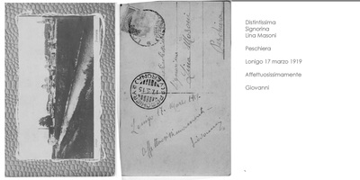
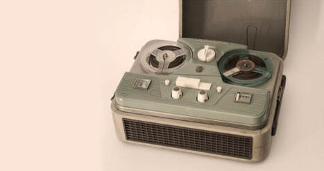

1914
Le cartoline del 1914
Una pagina della corrispondenza di famiglia, da guardare e rileggere.
Sfoglia la raccoltaUN ALBUM DA TRAMANDARE
Fotografie, cartoline e voci di famiglia.
Un viaggio nella memoria dei Martinelli, per ritrovarsi e tramandare.
Vera, Mannina, Graziella, Sante
DENTRO L’ALBUM
LE PAROLE ATTRAVERSO IL TEMPO
Un primo percorso tra le cartoline conservate nell’album: le immagini e le date dei documenti originali.
1914
Una pagina della corrispondenza di famiglia, da guardare e rileggere.
Sfoglia la raccolta 1/2/1915
1/2/19151915
Una pagina della corrispondenza di famiglia, da guardare e rileggere.
Sfoglia la raccolta 12-06-1916
12-06-19161916
Una pagina della corrispondenza di famiglia, da guardare e rileggere.
Sfoglia la raccolta
17-03-19191919
Una pagina della corrispondenza di famiglia, da guardare e rileggere.
Sfoglia la raccolta
LE VOCI DI CASA
I racconti di famiglia continuano nelle parole di chi c’era. Una voce, un episodio, un modo di ricordare.
Ascolta i racconti
FAMIGLIA MARTINELLI
PER NON DIMENTICARE